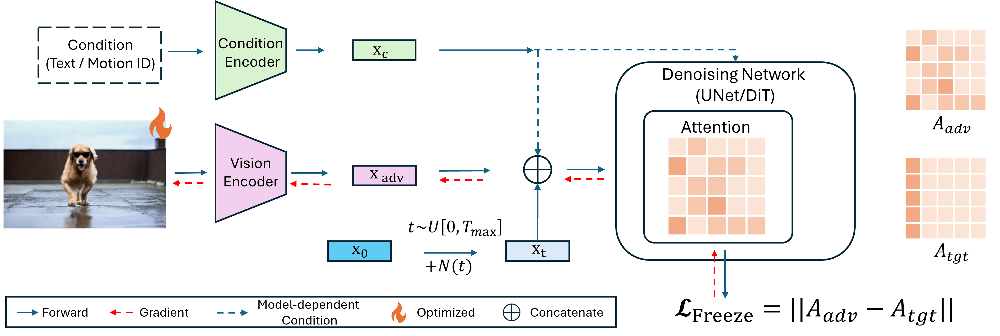

Vid-Freeze: Protecting Images from Malicious Image-to-Video Generation via Temporal Freezing
Abstract
The rapid progress of image-to-video (I2V) generation models has introduced significant risks by enabling deceptive or malicious video synthesis from a single image. Prior I2V-specific defenses attempt to immunize images by inducing spatio-temporal degradation, which does not necessarily provide meaningful protection, since residual motion can still convey malicious intent. In this work, we introduce Vid-Freeze, a novel adversarial defense that adds imperceptible perturbations to enforce temporal freezing in generated videos. Our method explicitly targets attention dynamics in I2V models to suppress motion synthesis. As a result, immunized images produce standstill or near-static videos, effectively blocking malicious content generation. Experiments demonstrate strong protection across models and support temporal freezing as a promising direction for proactive and meaningful defense against I2V misuse.
Method at a Glance

Results